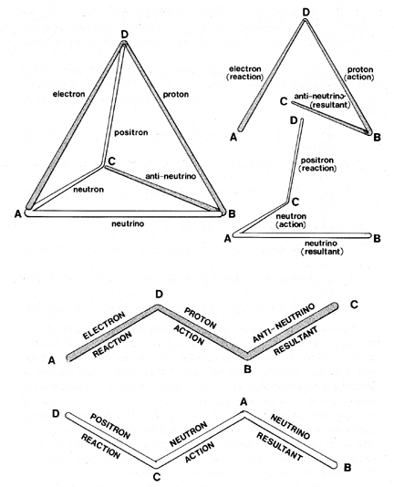

Fig. 935.23 Proton and Neutron Three-vector Teams: The proton and neutron always and only coexist as action vectors of half-quanta associable as quantum.
Copyright © 1997 Estate of R. Buckminster Fuller